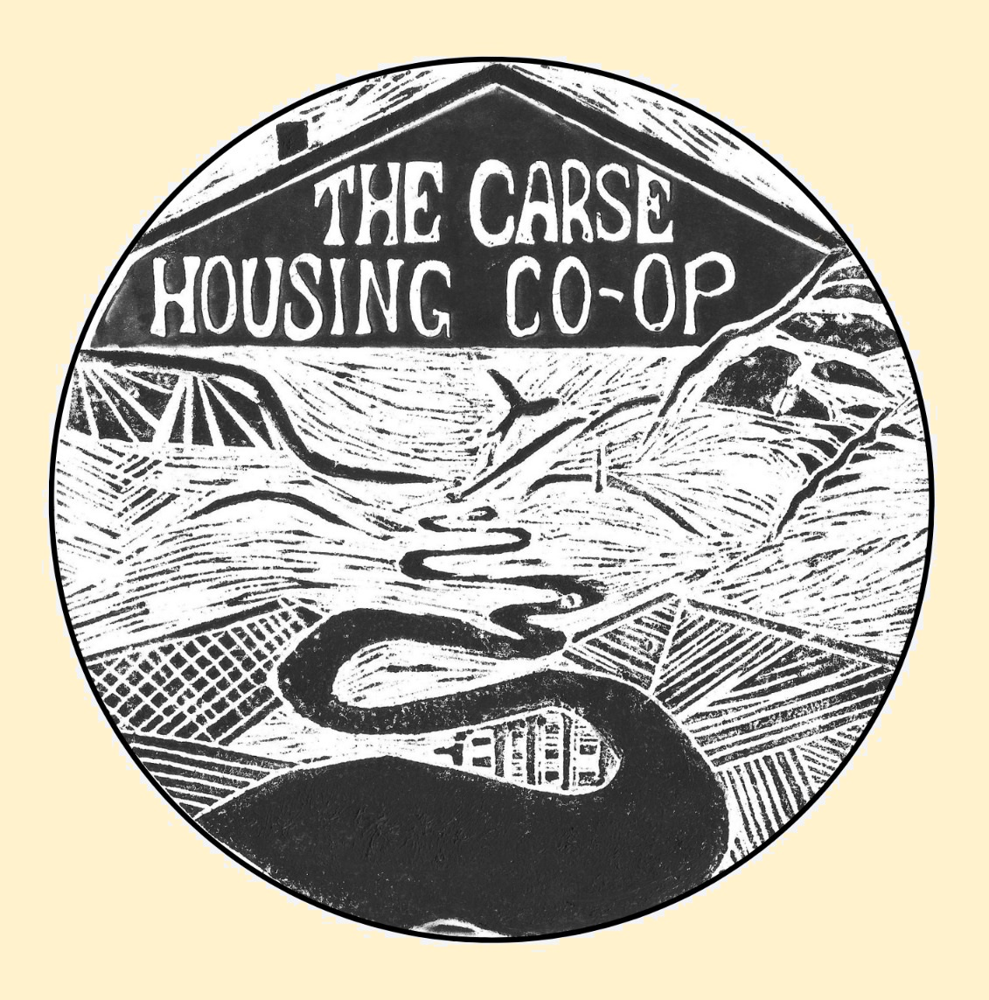
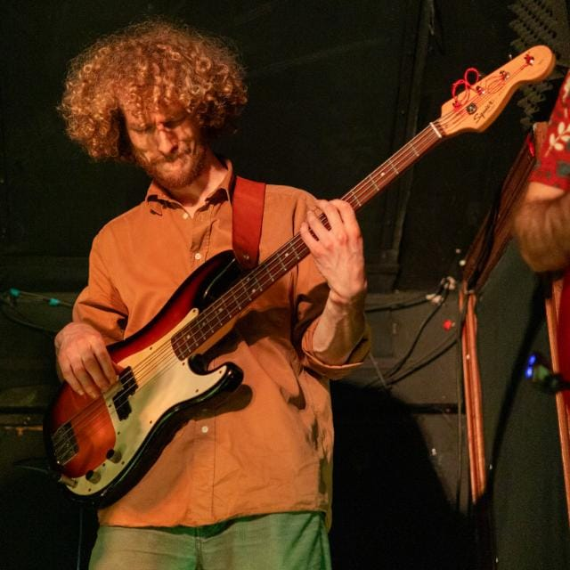
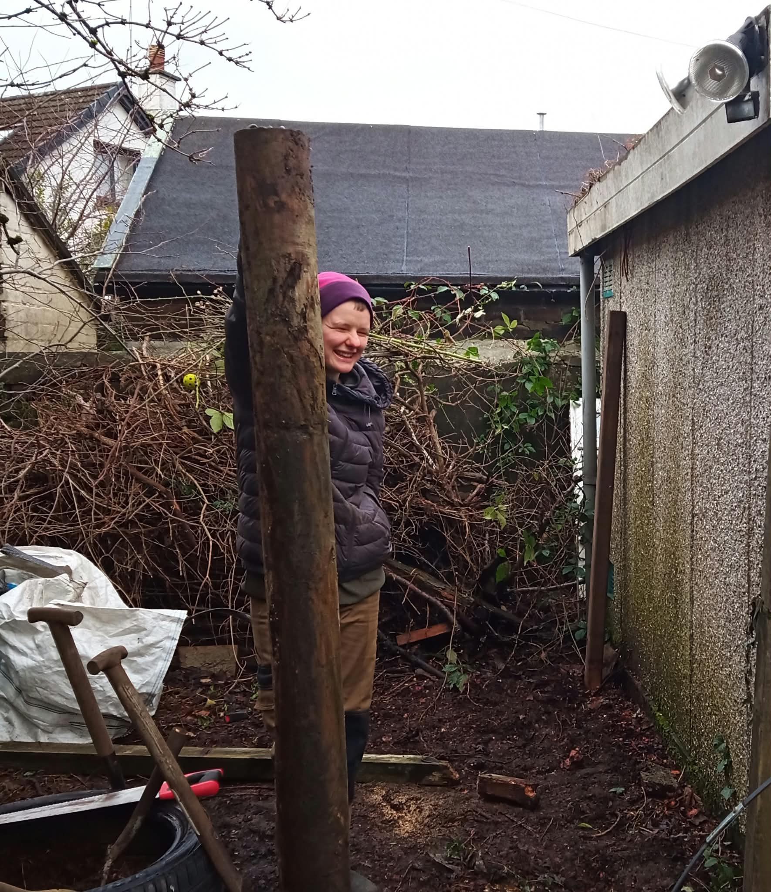
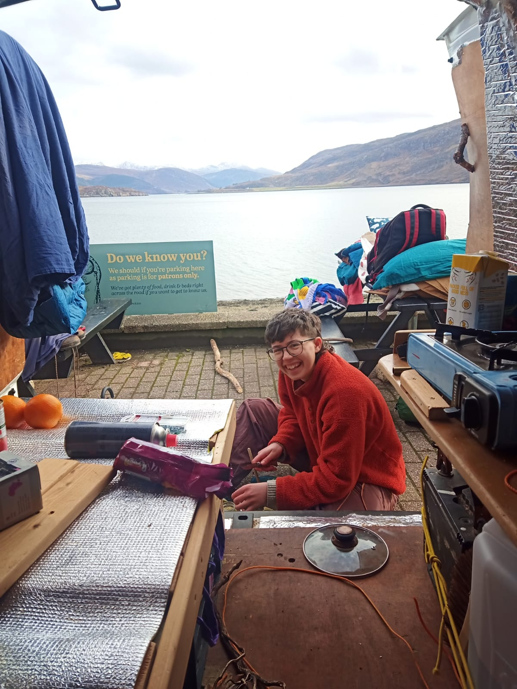
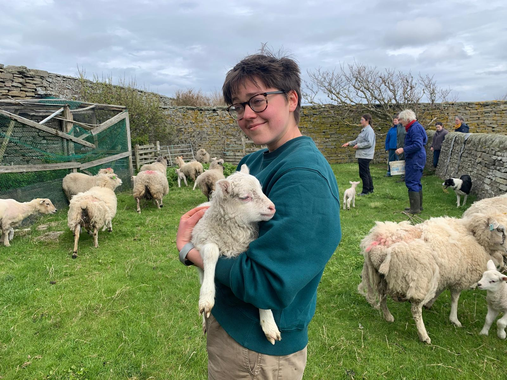

We are a Not-For-Profit Fully Mutual Housing Co-operative in Stirlingshire.
Our goal is to turn the belief in a fairer housing system into a practical reality, one that gives tenants autonomy, security and community regardless of their economic circumstances or stage of life.
The co-operative will initially provide housing for six to ten members, subject to property availability.
The Carse housing co-op will be a fully mutual housing co-op of par value, meaning the Co-op will own the property, and all current tenants will be equal owners/members of the Co-op.
When one tenant/member wants to leave the co-op they sell their ‘share’ to the next tenant/member.
In this way the model gives the freedom of rented accommodation but also the security and autonomy of ownership.
The assets of the Co-op are asset - locked, preventing any sale for the benefit of members.
In the event of dissolution any profits go to the named beneficiary; Radical routes ltd, a co-operative dedicated to supporting housing co-ops in the UK.
The co-op is a not for profit organisation, and will apply any surpluses generated from rent towards carrying out the objects of the Co-operative, upon agreement by general meeting.
The co-op will be funded through two primary sources, a mortgage and ‘loanstock’.
The Carse housing co-op, as a registered community benefit Society, will apply for a mortgage which will cover most of the cost of a house.
The deposit, land tax, surveyors and solicitors fees will be paid The co-op would raise ‘loanstock’ to fund the costs not covered by the mortgage including the deposit, the taxes and the survey fees.
Loanstock is a collection of fixed term loans made to the co-op by external private individuals. Payments are made directly to the co-op and do not go through any intermediary services. Once the payments are received a Loanstock Agreement is issued with the agreed terms of the loan. The loanstock is issued as stocks, rather than shares, and does not give lenders any powers in the running of the co-op.
These debts will be paid off through rent from tenants, the debts are all tied to the Co-op not to the individual tenants meaning tenants can leave and be replaced by other tenants who will continue to pay the rent.
Issues with private rental accommodation are well known and extensive.
There is not a sufficient supply of affordable rented housing and thus tenants are forced to accept poor quality housing, high rents, and/or precarious and unsecured tenure. Evidence suggests that renters are significantly more likely to experience anxiety than homeowners, reflecting the broader social impact of housing insecurity.
At the same time, private homeownership comes with its own issues, it may be financially unattainable - average house prices in the UK are almost nine times higher than the national average annual salary - or simply because someone may not be in a stage of life where it works to be personally tied to a mortgage.
The Scottish Government declared a national housing emergency in May 2024, and there remains a lack of suitable housing stock. There must be an increase in rental accommodation, to meet housing needs, and private landlords and letting agents often cite this as a reason to relax legislation and taxes on landlords, measures which have been introduced to tackle exploitation of tenants.
Increasing the amount of rental accommodation that are housing co-ops, provides the increase in rented accommodation without needing to incentivise private landlords. Thus, in a housing environment which gives only the choice between often exploitative private rented accommodation and, depending on finances, personal ownership, the Carse Housing Co-op will be part of a movement to demonstrate an accessible alternative.

He works on water quality monitoring research at Stirling University and facilitates several youth-music projects in Stirling that provide free-to-access music workshops to young people over a variety of genres and styles.
Outside of his work, Daniel is focused on giving time and energy to projects which build community and empower people.
Some previous projects which he has worked on include the setup of a now long-running community kitchen in Cambridge, and supporting the development of a multi-generational housing cooperative in the trossachs. Alongside this, he regularly works with the activist infrastructure group SCAMPI, providing events infrastructure to small activist groups and community organisations around Scotland.
Daniel spends his spare time exploring Scottish hills by foot, bike and ski, and looks after a small vegetable patch and two chickens.

At the Stirling Student Union sustainability hub, she helps to run the second hand and zero waste shop, runs monthly repair cafes and completes other practical sustainability related workshops.
At Alpkit, she works within the repairs service, upcycling gear that can no longer be used for its intended purpose and completes outdoor gear repairs.
Erin believes that volunteering for community groups both helps her gain important skills, and is part of ensuring communities have the skills and resources they need. She currently volunteers with Recyk-a-bike, a bike recycling hub, and with SKIFA and SCAMPI, two Scottish mutual aid groups which provide kitchen, and more general infrastructure for activist and community groups.
She has an interest in land justice and whenever she can she helps on a friend's croft in the North West Highlands and on a farm in Perthshire, both of which are focusing on rewilding whilst also using the land for food and timber production.

They are focusing their efforts in supporting grassroots filmmaking and are finding their place in the growing Scottish film industry working with other young and inspiring filmmakers.
They are also passionate about animal welfare and how domesticated animals can fit into a healthy ecosystem. They would like to explore using heritage horses in land management, as well as solutions to wider horse welfare that consider the environment those horses have been bred to live in.
They value learning practical skills and are currently improving their welding and metalworking. In their projects they prioritise saving and using resources that would otherwise be wasted, and enjoy the challenge of using what is available.

Growing up on a small island in Orkney, Jessie has learnt about the ability of a community to achieve things, even without extensive resources.
She appreciates the connection and knowledge she has of her home, which has allowed her to notice the changes that have happened to the environment, just over her lifetime, an experience which has compelled her to gain skills in conservation.
Jessie is most at home in the outdoors, particularly exploring the area she lives as it is important to her to be connected and understand the natural world around you.
She is looking to begin work as an ecologist supporting the regeneration of Scottish, and global, ecosystems. She would like to focus on conservation in a way which acknowledges the people living there and believes community driven conservation is important because the folk that live in the area, especially those that work the land, understand the area and environment the most.
Access to democratic, tenant owned housing
To establish a property that will always be democratically controlled by the residents of that property and be accessible to those that would not usually be able to afford this privilege.
Environmental stewardship
To manage the property in a way that uses the Earth’s finite resources responsibly. To the best of our ability, we will ensure that the house is made as energy efficient as possible under our ownership. Where possible, we would aim for a house with enough of a garden for us to grow some of our own produce, and manage this garden in a way which equally benefits biodiversity and our needs. Additionally, if possible, we would use this garden to increase wider community access to land.
Collective ownership of resources
The belief that place based collective ownership of resources empowers people to take responsibility for those resources, and that these resources will be more likely responsibly managed than through traditional individual ownership methods. We would not stop at only securing the housing co-op’s property for community ownership but would seek to support other community groups to secure resources to be held under common ownership.
Concern for the wider community
A commitment to, where possible, using the resources of the co-op to benefit the wider community within the Forth valley. This may be by distributing rental income (once all debts are paid) to community organisations. Or the housing security, stability and affordable rents that members gain from living in the co-op’s property, offers them increased capacity and energy to volunteer with and contribute to community organisations.
Education, Training and Information
The co-op will seek to provide education and training for their members, so that they can contribute effectively to the development of the co-op and to other groups they may be involved in. Furthermore, the Co-op will inform the general public, particularly young people and people in positions of influence, about the nature and benefits of co-op business models.
Development and support of co-ops
The co-op will seek to support other co-ops and to aid the development of the housing co-op sector in Scotland through participating in policymaking, supporting new co-ops with the knowledge we have gained and eventually, once our own debts have been paid off, through possible financial assistance.
What is the process for a new member joining?
New members will join as probationary members for six months following approval at a General Meeting.
During this period, the member has the same status as a full member, including the right to tenancy, but must follow the Co-operative’s probationary conditions and joining procedures.
At the end of the probationary period, the next General Meeting decides whether to grant full membership or end the membership and tenancy.
The probationary period may be extended by mutual agreement, provided the total residency does not exceed one year.
A probationary member can also end the period by giving one month’s notice.
What stops the tenants who live in the co-ops when the debts are paid off from selling the house and taking the money?
The primary rules of the co-op, which are legally binding, prevent any portion of the income or the property of the Co-operative being transferred either directly or indirectly by way of dividend, bonus or otherwise by way of profit, to members of the Co-operative.
In the event that the co-op must sell the property any profits will go to the named beneficiary, Radical Routes Lmt.
What happens when all of the debts have been paid off?
Once all debts have been paid off, rent will continue to be paid, and will continue to go toward annual expenditure and maintenance, but will also go, upon agreement by general meeting, to financially supporting the aims and objectives of the co-op, such as lending money to other groups which aim to gain place based community ownership of resources.